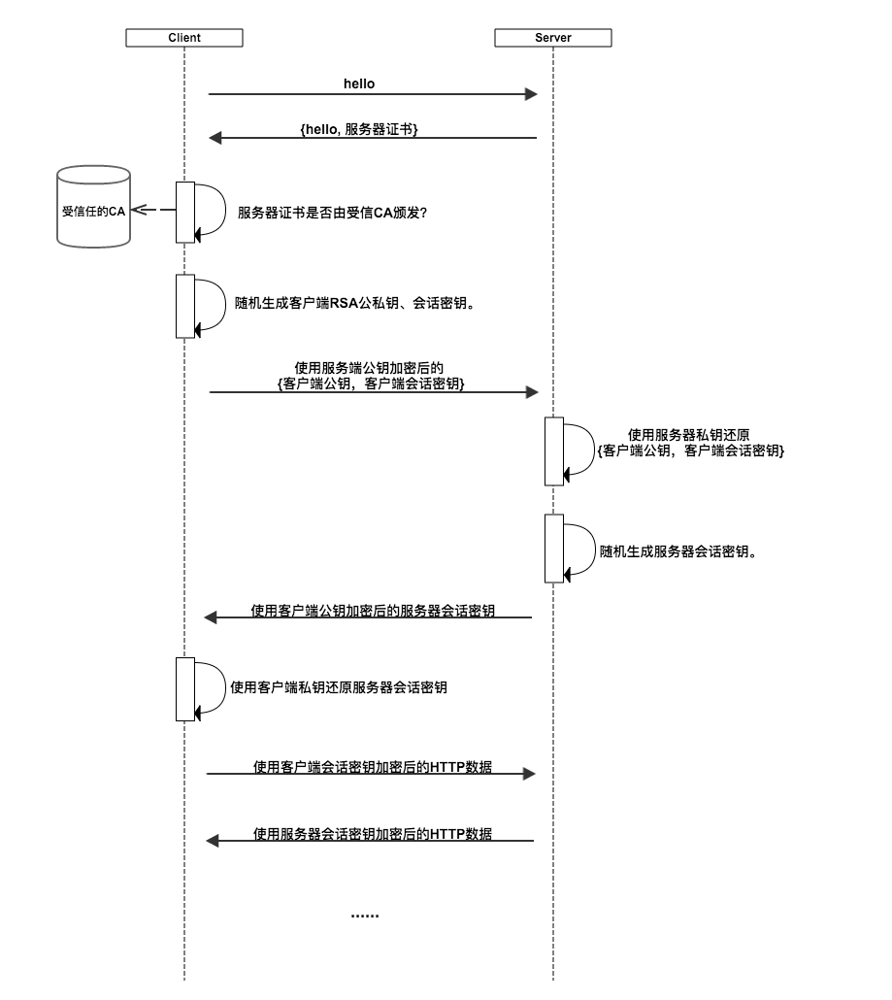

记录总结一下自己平时面试时遇到的计算机网络问题。
# 前置：计算机网络模型

# TCP、UDP 协议知识
他们都是运输层的协议。
# TCP
一种面向连接的服务。
每一条 TCP 连接只能有两个端点，每一条 TCP 连接只能是点对点的（一对一）
提供可靠交付
全双工通信
面向字节流
TCP 中的流指向的是流入或流出进程的字节序列。
面向字节流的含义是：虽然程序和 TCP 的交互是一次一个数据块，但 TCP 把应用程序交下来的数据看成仅仅是一连串无结构的字节流。
同时不保证数据块大小对应，但能保证接收方和发送方字节流完全一样。
# UDP
一种无连接协议，
- 无连接
- 尽最大努力交付（不保证可靠交付）
- 面向报文
- 没有拥塞控制
- 首部开销小，只有 8 个字节（TCP 有 20 个字节）
# 可靠交付的原理
# 停止等待协议
- 每发送完一个分组停止发送，等待对方确认在发送下一个
- 超时重传。超时后未收到确认则重新发送
- 流水线传输以提高传输效率。
# 连续 ARQ 协议
- 滑动窗口， 位于发送窗口内的分组都可连续发送出去，不需要等待对方的确认。（TCP 中窗口以字节为单位)
- 每收到一个确认，就把窗口往后滑动一个分组的位置
- 接收方累计确认：对按序到达的最后一个分组发送确认，这样就表示：到这个分组为止的所有分组都已正确收到了。
# TCP、UDP 的区别
- tcp 是面向连接的，udp 是无连接的
- tcp 提供可靠服务，传输的数据不丢失、不重复、按序到达。UDP 尽最大努力交付，不可靠。
- TCP 面向字节流、udp 面向报文。udp 在网络拥塞时不会降低速度，但可能会丢包。
# TCP 的三次握手
为了保证客户和服务器双方都知道对面具有正常收发的能力。
客户 A 和服务器 B
- A 的 TCP 向 B 发出连接请求报文段。首部中同步位 SYN=1，并选择序号 seq=x，表明传送数据时第一个数据字节序号是 x
- B 的 TCP 收到连接请求报文段后，如同意，则发回确认。确认报文段中 SYN=1，ACK=1，其确认号 ack=x+1，自己选择的序号 seq=y
- A 收到此报文段后向 b 确认。其 ACK=1，确认号 ack=y+1。连接建立。
- B 收到后，通知 B 的进程，连接建立。
# TCP 四次挥手
双方都要释放到对方的连接。
客户 A 和服务器 B
- A->B，A 的应用先向其 TCP 发出释放连接报文段。
- B->A，B 发出确认，此时处于半关闭状态，B 若发送数据，A 仍要接受。
- B->A
- A->B
# TCP 拥塞控制
主要有四种算法（Reno 算法）：
- 慢开始 / 慢启动
- 拥塞避免
- 快重传
- 快恢复
# 慢开始
主要是用来确定网络的负载能力。
每收到一个 ACK，就把拥塞窗口 + 1，即一个轮次加一倍。指数型增加
有一个慢开始门限（ssthresh）来控制慢开始最大增加数量
当拥塞窗口数 >= 这个慢开始门限后，执行拥塞避免算法
如果网络拥塞（丢包或超时），拥塞窗口置 1，把慢开始门限减半，重新继续慢开始算法。
# 拥塞避免
让拥塞窗口线性增加，相对慢开始较缓慢。
同样，如果网络拥塞，拥塞窗口置 1，把慢开始门限减半，继续慢开始。

# 快重传
为了让发送方尽早知道个别报文段丢失。丢失的时候一连发送三个 ACK。
所以一旦收到三个 ACk，就立即执行重传，然后执行快恢复算法。
# 快恢复
- 慢开始门限 ssthresh = 当前拥塞窗口 / 2
- 新拥塞窗口 = 慢开始门限
- 执行拥塞避免算法。

# http 协议
# 基本概念
http 协议，全称 Hypertext Transfer Protocol，超文本传输协议，它是基于 TCP/IP 协议，运行于应用层上的、世界上应用的最广泛的网络协议。
# 特点
http 是明文传输的，不够安全。
http 端口一般为 80
# http 的一些版本特性
# http1.1
# 长连接
HTTP1.1 中支持长连接，在一个 TCP 连接上可以传输多个 HTTP 请求和响应，一定程度上弥补了 HTTP1.0 每次请求都要创建连接的缺点。在 1.0 中需要使用 keep-alive 参数来开启长连接。
# host 域
在 http1.0 中，认为每一台主机对应着一个 ip 地址。但是随着虚拟主机的发展，一台物理主机上可能存在多个虚拟主机，并且共享一个 ip 地址。http1.1 中支持 host 域
# http2.0
# 二进制分帧
新的协议采用二进制格式将数据解析成更小的帧。服务器和浏览器通过交换帧来通信。
# 多路复用
HTTP2.0 支持多路复用，同一个连接并发处理多个请求
# 头部数据压缩
在 http1.1 中，HTTP 请求由请求头、消息主体等几部分构成，主体一般都会经过 gzip 压缩，或本身就是压缩后的二进制文件，但是头部是直接以文本传输的。
http2.0 中使用 HPACK 算法对头部的数据进行压缩，并且要求客户端和服务器都维护之前的报头字段列表，发起第一个请求之后的请求，浏览器仅需发送与前一个报头的不同之处。
# 服务器推送
服务端推送是一种在客户端请求之前发送数据的机制。网页使用了许多资源：HTML、样式表、脚本、图片等等。在 HTTP1.1 中这些资源每一个都必须明确地请求。这是一个很慢的过程。浏览器从获取 HTML 开始，然后在它解析和评估页面的时候，增量地获取更多的资源。因为服务器必须等待浏览器做每一个请求，网络经常是空闲的和未充分使用的。
为了改善延迟，HTTP2.0 引入了 server push，它允许服务端推送资源给浏览器，在浏览器明确地请求之前，免得客户端再次创建连接发送请求到服务器端获取。这样客户端可以直接从本地加载这些资源，不用再通过网络。
# 流控制
流控制允许接收者主动示意停止发送数据或减少发送数据量。比如观看视频的时候。
# https 协议
https 是以安全为目标的 HTTP 通道，它是通过 http 加入 SSL 层，对数据进行加密处理来达到安全的目的的。
# 与 http 的区别
- 相比 http，https 需要 ca 证书，费用较高
- 常用端口为 443
- 由于要建立 ssl 连接，比 http 更加费时
# 加密特点
https 是非对称加密 + 对称加密的结合，简单来说，就是加密传输数据的加密方式是对称加密的，传输这个对称加密密钥的加密方式是非对称加密的。
- 客户请求服务器，服务器首先非对称加密，产生一个服务器公钥和密钥，然后将这个公钥传输给客户（通常是在 ca 证书里一起给客户）
- 客户随机生成一个会话密钥，并用服务器的公钥加密后传输给服务器
- 服务器收到这个会话密钥后，用自己的私钥解密出会话密钥
- 这样双方都拥有这个会话密钥了，通过这个会话密钥加密要传输的数据。
实际上这样也不是绝对安全的，有兴趣可以看彻底搞懂 HTTPS 的加密原理 - 知乎 (zhihu.com)

# http 状态码
| 状态码 | 意义 |
|---|---|
| 100 | 继续，客户端应继续其请求 |
| 200 | 成功，一般用于 GET 或 POST 请求 |
| 204 | 无内容。服务器成功处理，但未返回内容 |
| 301 | 永久重定向，请求的资源已经永久移动到新的位置 |
| 302 | 临时重定向，资源临时移动。（标准中规定禁止将 post 方法改为 get 方法，但实际使用未必） |
| 304 | 未修改，涉及浏览器协商缓存，后续缓存笔记中会细讲 |
| 307 | 临时重定向，遵照浏览器标准不会把 post 请求改成 get |
| 400 | 客户端请求语法错误，服务器无法理解 |
| 401 | 需要身份认证 |
| 403 | 服务器理解客户端的请求，但拒绝执行 |
| 404 | not found，找不到资源 |
| 500 | 服务器内部错误，无法完成请求 |
| 502 | 作为网关或代理服务器尝试执行请求时，从远程服务器接收到一个无效请求 |
| 503 | 超载或系统维护，服务器暂时无法处理系统请求。 |
# http 常用请求方法
# GET 方法、POST 方法的区别？
表面上，他们有着这些区别：
- get 参数通过 url 传递，post 放在请求 body 中。
- url 长度一般都有限制，间接限制了 get 参数长度，而 post 没有
- get 请求浏览器会主动缓存，请求参数会被完整的保留在浏览器历史记录里
- GET 产生一个 TCP 数据包，POST 产生两个 TCP 数据包。因为一般来说 POST 会先发送头部，然后等待服务器响应返回 100 后，再发送数据。（但其实不是所有 POST 都产生两个数据包，像 firefox 就只发一个）
但其实，他们本质上都是 TCP 连接下的，没有差别，只是 HTTP 的规定和浏览器的限制让它们有了区别
# CDN 原理
CDN 的全称是 Content Delivery Network，即内容分发网络。他的基本原理是广泛采用各种缓存服务器，这些缓存服务器分布到用户访问相对集中的区域。在用户访问时，利用全局负载技术将用户访问指向最近的工作正常的缓存服务器上，由缓存服务器直接响应。
# 经典问题
# 输入一个 URL 到地址栏，到这个页面展现出来的中间发生了什么？
- 域名解析。先找到对应服务器的 ip 地址，在这个过程中，会先查找缓存（浏览器缓存 -> 系统缓存 -> 路由器缓存）都没有就查询 DNS 服务器
- 建立 TCP 连接 —— 三次握手。三次握手是为了保证浏览器和服务器都知道对方具有收发的能力。
- 发送 HTTP 请求。
- 服务器接收请求并响应，返回资源。
- 浏览器解析渲染页面，同时设置一些缓存。浏览器首先会从文档中解析出两棵树：DOM 树和 CSSOM 树，然后把他们关联起来成为一颗渲染树，再根据渲染树进行 layout、paint（重排、重绘）
- 结束 TCP 连接 —— 四次挥手，释放两个方向的连接，首先浏览器发请求释放，服务器回应，释放了浏览器到服务器方向的连接，再到服务器发请求，浏览器回应，释放服务器到浏览器方向的连接。
# 延伸
# 什么时候会发生重排？什么时候重绘？关系？
发生重排一定会发生重绘，重绘不一定会重排。
当改变页面布局，如改变元素宽高、位置等属性，会造成文档流中的元素需要重新布局，这时候就需要重排，然后重绘。
如果只是改变不影响布局的属性，如背景颜色等，就只会发生重绘。
利用这一点，我们可以尽量的减少重排来优化前端的性能，比如统一改变样式（使用类）、减少改变布局。